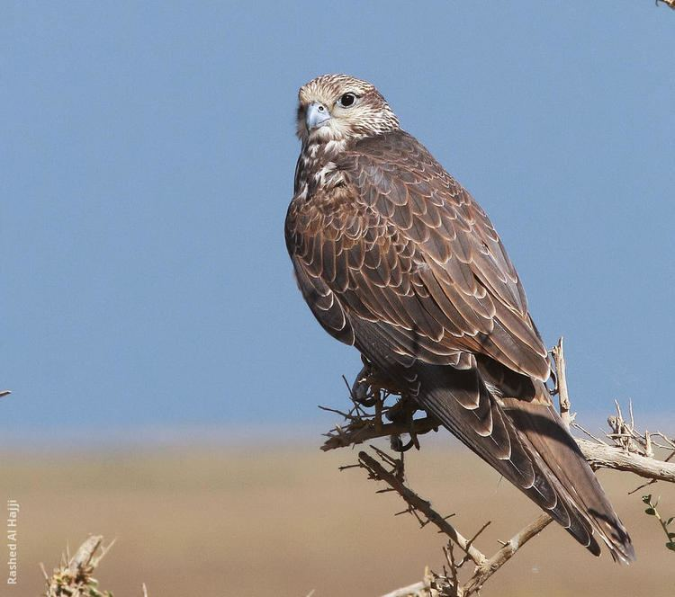

Calling
Saker falcons communicate vocally and their call is a sharp 'kiy-ee' or a repeated 'kyak-kyak-kyak'.
Habitat
The Mongolian Saker Falcon Falco cherrug progressus is found inhabiting the mountainous steppe
landscapes of Mongolia and Northern China, in Russia nesting in South-Eastern Altai, Tuva and
Transbaikal.
Behaviour
comming soon!
Diet
Unlike Gyrfalcon nests, Saker nests are cleaner in appearance due to the birds' primary diet of ground
squirrels and pikas.
Fun Fact
The Saker falcon has been used in falconry for thousands of years, and like its very close relative, the
gyrfalcon is a highly regarded falconry bird. ... Falcons are the fastest animals on the planet; they
can reach a speed of 200 mph (322 km/h) when they pursue their prey.
Info collected by: Arjun Kalpana Harshal Baviskar
"THANK YOU"